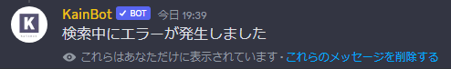
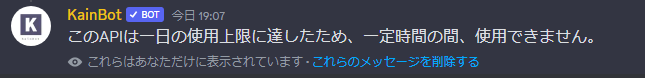
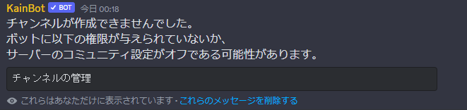
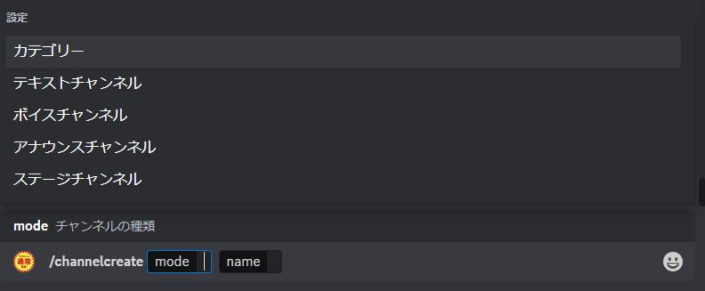
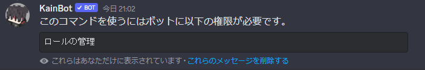
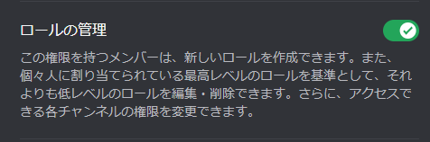
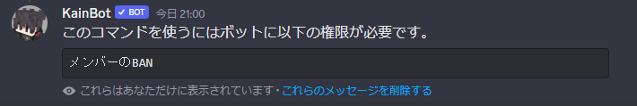
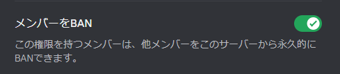
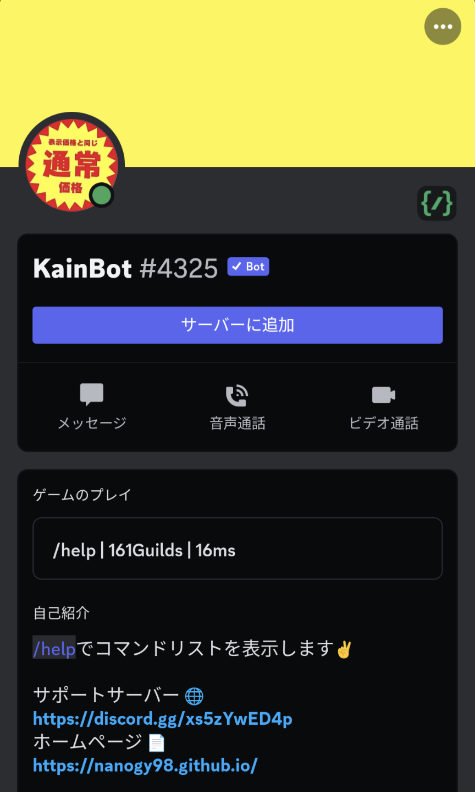
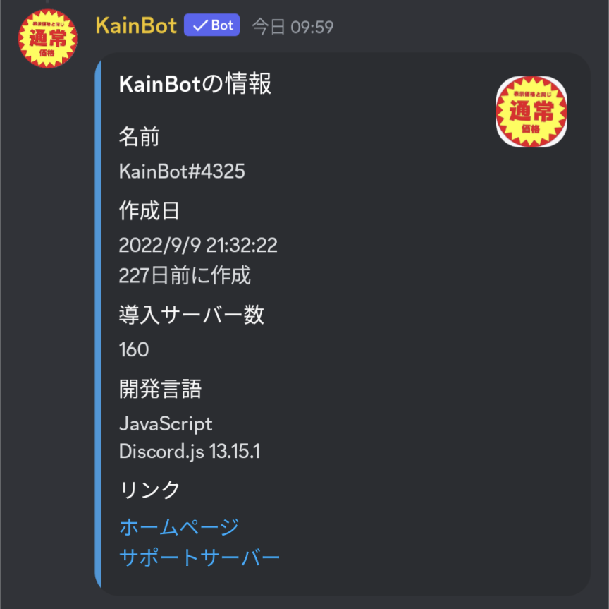

＜ コマンド名： /search | /niconico | /ytsearch | /news ＞
入力したテキストが正しくない
APIがレートの上限に達している
APIの一日の実行回数が上限が達している
※この場合、２４時間が経過すると実行回数がリセットされ
再度、実行可能となります。
APIがレートの上限に達している
APIの一日の実行回数が上限が達している
※この場合、２４時間が経過すると実行回数がリセットされ
再度、実行可能となります。


＜ コマンド名： /channelcreate | /ticket ＞

・このエラーはボットにチャンネルを作成する権限がないとき表示されます。
このコマンドを使う場合はボットに権限を付与してください(画像下)
このコマンドを使う場合はボットに権限を付与してください(画像下)

※アナウンスチャンネル及びステージチャンネルを作成する場合は、
サーバーのコミュニティ設定がオンになっていないと作成できません。※
サーバーのコミュニティ設定がオンになっていないと作成できません。※


＜ コマンド名： /rolecreate ＞

・このエラーはボットにロールを作成する権限がないとき表示されます。
このコマンドを使う場合はボットに権限を付与してください(画像下)
このコマンドを使う場合はボットに権限を付与してください(画像下)

＜ コマンド名： /banlist | /ban | /unban ＞

・このエラーはボットがサーバー内のBANされているユーザー取得できないときに表示されます。
このコマンドを使う場合はボットに権限を付与してください(画像下)
このコマンドを使う場合はボットに権限を付与してください(画像下)

＜ ボットのプロフィール内のリンクを開くことができない時 ＞

・スマホ版のDiscordでプロフィールからURLを開くことが出来ない時は
KainBotにて /about と入力することでリンクにアクセスすることができます。
KainBotにて /about と入力することでリンクにアクセスすることができます。
